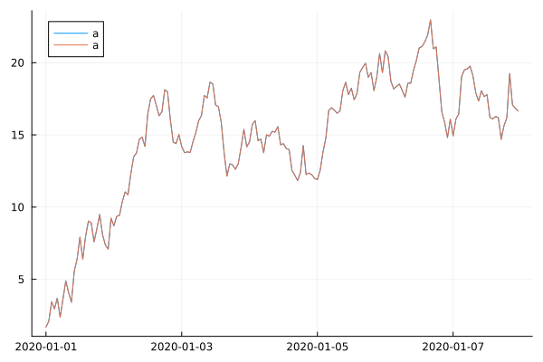
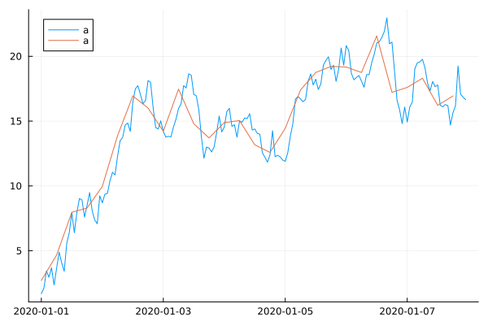

Retime
The retime function allows you to retime, i.e. change the timestamps of a TimeArray, similar to what Matlab's retime does.
using Plots, Dates, TimeSeries
gr()
timestamps = range(DateTime(2020, 1, 1), length = 7*24, step = Hour(1))
ta = TimeArray(timestamps, cumsum(randn(7*24)), [:a])168×1 TimeArray{Float64, 1, DateTime, Vector{Float64}} 2020-01-01T00:00:00 to 2020-01-07T23:00:00
┌─────────────────────┬──────────┐
│ │ a │
├─────────────────────┼──────────┤
│ 2020-01-01T00:00:00 │ 0.945461 │
│ 2020-01-01T01:00:00 │ -0.64693 │
│ 2020-01-01T02:00:00 │ -3.65944 │
│ 2020-01-01T03:00:00 │ -4.57012 │
│ 2020-01-01T04:00:00 │ -5.56053 │
│ 2020-01-01T05:00:00 │ -6.63431 │
│ 2020-01-01T06:00:00 │ -6.9126 │
│ 2020-01-01T07:00:00 │ -8.66276 │
│ ⋮ │ ⋮ │
│ 2020-01-07T17:00:00 │ -7.25812 │
│ 2020-01-07T18:00:00 │ -6.84261 │
│ 2020-01-07T19:00:00 │ -6.18256 │
│ 2020-01-07T20:00:00 │ -6.93157 │
│ 2020-01-07T21:00:00 │ -6.22709 │
│ 2020-01-07T22:00:00 │ -5.82314 │
│ 2020-01-07T23:00:00 │ -7.31261 │
└─────────────────────┴──────────┘
153 rows omittedUsing a new time step
retime(ta, Minute(15))669×1 TimeArray{Float64, 2, DateTime, Matrix{Float64}} 2020-01-01T00:00:00 to 2020-01-07T23:00:00
┌─────────────────────┬──────────┐
│ │ a │
├─────────────────────┼──────────┤
│ 2020-01-01T00:00:00 │ 0.945461 │
│ 2020-01-01T00:15:00 │ 0.945461 │
│ 2020-01-01T00:30:00 │ 0.945461 │
│ 2020-01-01T00:45:00 │ 0.945461 │
│ 2020-01-01T01:00:00 │ -0.64693 │
│ 2020-01-01T01:15:00 │ -0.64693 │
│ 2020-01-01T01:30:00 │ -0.64693 │
│ 2020-01-01T01:45:00 │ -0.64693 │
│ ⋮ │ ⋮ │
│ 2020-01-07T21:30:00 │ -6.22709 │
│ 2020-01-07T21:45:00 │ -6.22709 │
│ 2020-01-07T22:00:00 │ -5.82314 │
│ 2020-01-07T22:15:00 │ -5.82314 │
│ 2020-01-07T22:30:00 │ -5.82314 │
│ 2020-01-07T22:45:00 │ -5.82314 │
│ 2020-01-07T23:00:00 │ -7.31261 │
└─────────────────────┴──────────┘
654 rows omittedUsing new timestep vector
new_timestamps = range(DateTime(2020, 1, 1), DateTime(2020, 1, 2), step = Minute(15))
retime(ta, new_timestamps)97×1 TimeArray{Float64, 2, DateTime, Matrix{Float64}} 2020-01-01T00:00:00 to 2020-01-02T00:00:00
┌─────────────────────┬──────────┐
│ │ a │
├─────────────────────┼──────────┤
│ 2020-01-01T00:00:00 │ 0.945461 │
│ 2020-01-01T00:15:00 │ 0.945461 │
│ 2020-01-01T00:30:00 │ 0.945461 │
│ 2020-01-01T00:45:00 │ 0.945461 │
│ 2020-01-01T01:00:00 │ -0.64693 │
│ 2020-01-01T01:15:00 │ -0.64693 │
│ 2020-01-01T01:30:00 │ -0.64693 │
│ 2020-01-01T01:45:00 │ -0.64693 │
│ ⋮ │ ⋮ │
│ 2020-01-01T22:30:00 │ -2.54295 │
│ 2020-01-01T22:45:00 │ -2.54295 │
│ 2020-01-01T23:00:00 │ -2.72574 │
│ 2020-01-01T23:15:00 │ -2.72574 │
│ 2020-01-01T23:30:00 │ -2.72574 │
│ 2020-01-01T23:45:00 │ -2.72574 │
│ 2020-01-02T00:00:00 │ -1.71528 │
└─────────────────────┴──────────┘
82 rows omittedIrregular timestamps
You can perform retime on irregularly spaced timestamps, both using a TimeArray with irregular timestamps or using a vector of irregular timestamps. Depending on the timestamps upsampling or downsampling is used.
new_timestamps = vcat(
range(DateTime(2020, 1, 1), DateTime(2020, 1, 2)-Minute(15), step = Minute(15)),
range(DateTime(2020, 1, 2), DateTime(2020, 1, 3), step = Hour(1)),
)
retime(ta, new_timestamps)121×1 TimeArray{Float64, 2, DateTime, Matrix{Float64}} 2020-01-01T00:00:00 to 2020-01-03T00:00:00
┌─────────────────────┬────────────┐
│ │ a │
├─────────────────────┼────────────┤
│ 2020-01-01T00:00:00 │ 0.945461 │
│ 2020-01-01T00:15:00 │ 0.945461 │
│ 2020-01-01T00:30:00 │ 0.945461 │
│ 2020-01-01T00:45:00 │ 0.945461 │
│ 2020-01-01T01:00:00 │ -0.64693 │
│ 2020-01-01T01:15:00 │ -0.64693 │
│ 2020-01-01T01:30:00 │ -0.64693 │
│ 2020-01-01T01:45:00 │ -0.64693 │
│ ⋮ │ ⋮ │
│ 2020-01-02T18:00:00 │ 1.26957 │
│ 2020-01-02T19:00:00 │ -0.660237 │
│ 2020-01-02T20:00:00 │ -1.51387 │
│ 2020-01-02T21:00:00 │ -1.68267 │
│ 2020-01-02T22:00:00 │ 0.458611 │
│ 2020-01-02T23:00:00 │ -0.0921172 │
│ 2020-01-03T00:00:00 │ -0.286219 │
└─────────────────────┴────────────┘
106 rows omittedUpsampling
Interpolation is done using the upsample argument. If no data is directly hit, the specified upsample method is used. Available upsample methods are:
Linear()or:linearNearest()or:nearestPrevious()or:previousNext()or:next
ta_ = retime(ta, Minute(15), upsample=Linear())669×1 TimeArray{Float64, 2, DateTime, Matrix{Float64}} 2020-01-01T00:00:00 to 2020-01-07T23:00:00
┌─────────────────────┬───────────┐
│ │ a │
├─────────────────────┼───────────┤
│ 2020-01-01T00:00:00 │ 0.945461 │
│ 2020-01-01T00:15:00 │ 0.547363 │
│ 2020-01-01T00:30:00 │ 0.149265 │
│ 2020-01-01T00:45:00 │ -0.248832 │
│ 2020-01-01T01:00:00 │ -0.64693 │
│ 2020-01-01T01:15:00 │ -1.40006 │
│ 2020-01-01T01:30:00 │ -2.15318 │
│ 2020-01-01T01:45:00 │ -2.90631 │
│ ⋮ │ ⋮ │
│ 2020-01-07T21:30:00 │ -6.02512 │
│ 2020-01-07T21:45:00 │ -5.92413 │
│ 2020-01-07T22:00:00 │ -5.82314 │
│ 2020-01-07T22:15:00 │ -6.19551 │
│ 2020-01-07T22:30:00 │ -6.56787 │
│ 2020-01-07T22:45:00 │ -6.94024 │
│ 2020-01-07T23:00:00 │ -7.31261 │
└─────────────────────┴───────────┘
654 rows omittedplot(ta)
plot!(ta_)
Downsampling
Downsampling or aggregation is done using the downsample argument. This applies a function to each interval not including the right-edge of the interval. If no data is present in the interval the specified upsample method is used. Available downsample methods are:
Mean()or:meanMin()or:minMax()or:maxCount()or:countSum()or:sumMedian()or:medianFirst()or:firstLast()or:last
ta_ = retime(ta, Hour(6), downsample=Mean())28×1 TimeArray{Float64, 2, DateTime, Matrix{Float64}} 2020-01-01T00:00:00 to 2020-01-07T18:00:00
┌─────────────────────┬────────────┐
│ │ a │
├─────────────────────┼────────────┤
│ 2020-01-01T00:00:00 │ -3.35431 │
│ 2020-01-01T06:00:00 │ -9.24263 │
│ 2020-01-01T12:00:00 │ -7.98966 │
│ 2020-01-01T18:00:00 │ -3.81945 │
│ 2020-01-02T00:00:00 │ -0.940683 │
│ 2020-01-02T06:00:00 │ -0.246761 │
│ 2020-01-02T12:00:00 │ 1.76441 │
│ 2020-01-02T18:00:00 │ -0.370119 │
│ ⋮ │ ⋮ │
│ 2020-01-06T06:00:00 │ -4.10185 │
│ 2020-01-06T12:00:00 │ -4.64036 │
│ 2020-01-06T18:00:00 │ -3.69262 │
│ 2020-01-07T00:00:00 │ -0.0570419 │
│ 2020-01-07T06:00:00 │ -1.35879 │
│ 2020-01-07T12:00:00 │ -6.0298 │
│ 2020-01-07T18:00:00 │ -6.55326 │
└─────────────────────┴────────────┘
13 rows omittedplot(ta)
plot!(ta_)
Extrapolation
Extrapolation at the beginning and end of the time series is done using the extrapolate argument. Available extrapolate methods are:
FillConstant(value)or:fillconstantNearestExtrapolate()or:nearestMissingExtrapolate()or:missingNaNExtrapolate()or:nan
new_timestamps = range(DateTime(2019, 12, 31), DateTime(2020, 1, 2), step = Minute(15))
ta_ = retime(ta, new_timestamps, extrapolate=MissingExtrapolate())193×1 TimeArray{Union{Missing, Float64}, 2, DateTime, Matrix{Union{Missing, Float64}}} 2019-12-31T00:00:00 to 2020-01-02T00:00:00
┌─────────────────────┬──────────┐
│ │ a │
├─────────────────────┼──────────┤
│ 2019-12-31T00:00:00 │ missing │
│ 2019-12-31T00:15:00 │ missing │
│ 2019-12-31T00:30:00 │ missing │
│ 2019-12-31T00:45:00 │ missing │
│ 2019-12-31T01:00:00 │ missing │
│ 2019-12-31T01:15:00 │ missing │
│ 2019-12-31T01:30:00 │ missing │
│ 2019-12-31T01:45:00 │ missing │
│ ⋮ │ ⋮ │
│ 2020-01-01T22:30:00 │ -2.54295 │
│ 2020-01-01T22:45:00 │ -2.54295 │
│ 2020-01-01T23:00:00 │ -2.72574 │
│ 2020-01-01T23:15:00 │ -2.72574 │
│ 2020-01-01T23:30:00 │ -2.72574 │
│ 2020-01-01T23:45:00 │ -2.72574 │
│ 2020-01-02T00:00:00 │ -1.71528 │
└─────────────────────┴──────────┘
178 rows omitted